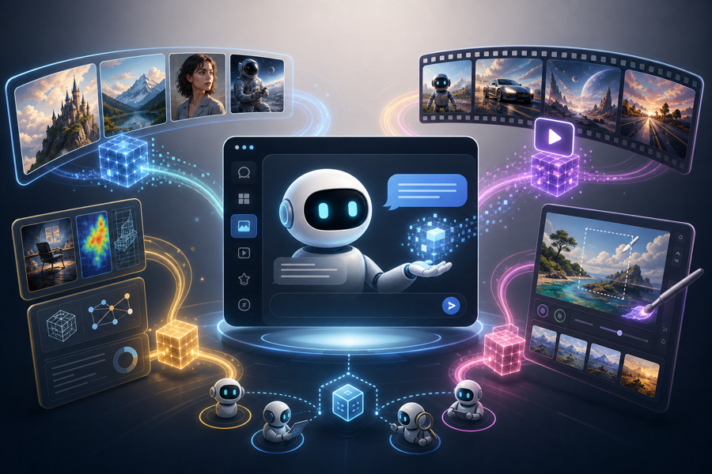
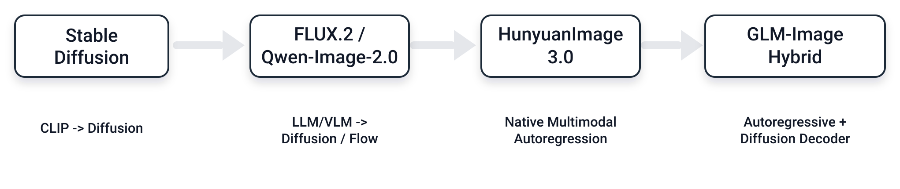
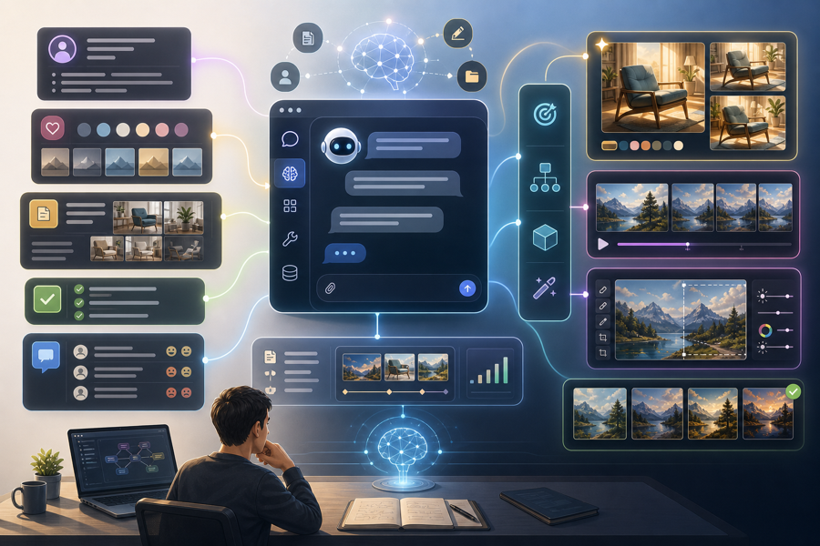

AI
视觉生成模型正在成为 Chatbot 的配件
曾经有一段时间，图像与视频生成看起来是一个独立的平台品类。Stable Diffusion、Midjourney、Runway、Pika 和 Luma 都试图把“生成视觉内容”做成一个独立的目的地。如今，这个目的地正在被重新定义。视觉生成正在变得不像一个独立应用，而更像 chatbot、agent 和多模态操作系统内部的一种渲染能力。

有几个信号让这一转变很难被忽视。
- Jiaming Song，Luma AI 前首席科学家，如今把自己描述为 Luma AI 前研究员。一位研究者的动向并不能决定一家公司或一个领域的命运，但它是一个有用的行业信号：围绕纯视觉生成公司的叙事，正在被卷入一个更大的多模态平台叙事。
- 截至 2026 年 6 月，ChatGPT Plus 的定价仍然是每月约 20 美元，并把图像生成列为其扩展功能之一。对许多用户来说，前沿图像模型不再是一个需要单独购买、学习、打开的工具，而是聊天窗口里的一个按钮。
- 架构本身也在向 LLM 和 MLLM 靠拢：从 CLIP 编码器加 diffusion 渲染器，到以 LLM/VLM 为条件的 diffusion 或 flow 模型，再到原生多模态自回归，以及自回归加 diffusion 的混合解码器。
视觉生成不会消失。它正在被更大的模型系统吸收，从“一个应用的主角”变成“chatbot 或 agent 的视觉输出层”。
1. 独立的视觉生成入口正在收窄
第一波视觉生成产品的形态很简单：打开一个网站或应用，输入一个 prompt，得到一张图或一段视频。入口本身就是产品。Midjourney 在 Discord 里长成了一个生成社区，Runway 成为视频创作平台，Luma 围绕 3D 和视频想象力构建产品。只要模型足够强，产品就有理由作为一个目的地存在。
但生成式 AI 的平台层变化得非常快。ChatGPT、Gemini、Claude、Grok 以及其他通用聊天界面，占据了更多的日常使用、更强的用户习惯、更顺畅的付费关系和更多的上下文。用户不再只是要一张图。他们在同一段对话里写提案、改文案、做幻灯片、搜参考资料、生成一张图，然后继续在对话里修改这张图。
在这样的工作流里，视觉生成的价值没有降低，反而更高了。但它的分发位置变了。用户不一定愿意为每个视觉任务打开一个新工具。更自然的动作是留在 chatbot 里说：“把这个想法变成一张图。”
这正是独立视觉生成公司尴尬的处境。它们也许仍然拥有强大的模型、出色的研究员和漂亮的 demo。但如果用户入口被通用 LLM 产品占据，视觉模型就有沦为后端能力的风险，而不再是用户每天造访的前门。
2. ChatGPT 把前沿图像生成变成了一项订阅功能
ChatGPT 内置图像生成带来的冲击，不仅在于质量强。更深层的冲击在于它的定价与分发。
过去，一个强大的图像模型可以作为独立产品收费：按积分、按图片张数、按生成视频的秒数，或者按创作者订阅。用户愿意为更好的生成质量单独付费，因为这种能力稀缺，入口也清晰。
然而，一旦前沿水平的图像模型被打包进 ChatGPT Plus 式的订阅，用户的价格锚点就变了。图像生成不再被视为一个单独的采购项目，而变成“我反正已经为 ChatGPT 付费了，顺便就能用的东西”。即使后端推理成本真实存在，用户感知到的边际价格也趋近于零。
这压缩了许多独立视觉产品的生存空间。不是因为它们不好，而是因为用户会问一个更苛刻的问题：
如果 ChatGPT 已经给了我一个强大、方便、理解我上下文的图像模型，我为什么还要为另一个独立入口付费？
独立产品依然可以赢。它们可以构建更深的专业工作流、更精细的控制、更强的视频工具、更好的协作，以及为设计师、电影人、广告人、游戏工作室和电商团队量身打造的界面。但“我们有一个更好的图像模型”这句话本身，将成为一条越来越弱的护城河。
3. 架构层面也在向 LLM 靠拢
更深层的变化发生在模型架构层面。
早期的 Stable Diffusion 范式可以概括为：CLIP → Diffusion。CLIP 文本编码器把 prompt 变成 embedding，diffusion 模型在隐空间中去噪，解码器渲染出最终图像。这是一个非常成功的系统，但在概念上，它仍然是一个文本理解模块与一个图像渲染模块的组合。
后来的系统，如 FLUX.2、Qwen-Image-2.0 和 HunyuanImage-2.1，则更接近：LLM/VLM → Diffusion 或 flow。文本编码器不再只是 CLIP 式的，它更像一个更强的语言或多模态理解模块，可以在把条件信号交给视觉主干去渲染之前，处理更长、更复杂、更结构化的指令。

沿着 HunyuanImage 3.0 的方向，故事又向前走了一步。模型不再只是用一个语言或视觉语言编码器，去给一个独立的渲染器提供条件。文本理解、多模态建模和视觉生成被推进一个更统一的自回归框架。这是更大的架构信号：图像生成正在进入那个已经承载语言、推理和多模态上下文的系统家族。
GLM-Image 则指向另一个终点：自回归加 diffusion 的混合设计。自回归阶段生成紧凑的视觉 token，diffusion 解码器再渲染出细节。Diffusion 不一定会消失，但它的角色变了。它成为一个解码器、渲染器或细化模块，而不再是视觉生成系统唯一的主干。
一句话概括：视觉生成正在从“一个带文本编码器的 diffusion 模型”，走向“一个带视觉渲染头的多模态模型系统”。
4. 为什么 chatbot 会赢：它们握着上下文
图像和视频生成很少是孤立的任务。用户通常需要的不是抽象意义上的“一张图”。他们需要：
- 把产品文案变成一张广告图；
- 把一篇文章变成封面和配图；
- 把分镜脚本变成一段短视频；
- 把会议纪要变成幻灯片；
- 把品牌规范、角色设定、历史修改版本和用户偏好，融合成一个新的视觉资产。
这些任务的核心不是一次性的 prompt 到图像，而是上下文、记忆、规划、工具使用、修改和多轮迭代。Chatbot 天然处在有利位置，因为对话里已经包含了用户的目标、文本、偏好、约束和反馈。视觉模型只是最后一步：把一个已经被理解的意图渲染出来。

这意味着未来的竞争，可能不在于谁能生成最漂亮的单张图，而在于谁能在一条完整的任务链中，最自然地生成、修改、解释并交付视觉内容。这正是独立视觉生成产品面临的挑战。如果它们不掌握上下文，就只掌握渲染。而单纯的渲染，终将被平台层商品化。
5. 视觉生成不会死，但独立视觉模型将被重新定价
我并不认为视觉生成模型会变得不重要。恰恰相反：视觉输出将是 AI 产品最重要的界面之一。每个 agent 都需要看图、画图、改图、做视频、生成 UI、制作广告素材、生产 3D 内容。
会变的，是模型公司与产品公司之间的价值分配。
如果一个视觉模型只是把 prompt 变成图像，它会越来越像一个 API、一个渲染层，或者一个可替换的工具。高价值的位置将是：
- 掌握用户入口的 chatbot 与 agent 平台：它们控制上下文、付费关系和默认工作流。
- 拥有专业工作流的垂直产品：影视、广告、电商、游戏、设计、仿真和创意生产。
- 拥有数据飞轮和分发能力的应用：模型输出直接进入真实的用户任务，并从反馈中不断改进。
- 与 LLM 深度融合的架构：不是孤立的 diffusion 渲染器，而是多模态系统的组成部分。
这就是为什么视觉生成市场越来越像 LLM 市场的一个子系统。不是因为图像和视频不重要，而是因为它们太重要了，重要到不能只活在一个独立应用里。它们必须成为通用智能界面的一部分：语言、工具、记忆、搜索、规划，然后才是视觉表达。
结语：视觉生成成为更大模型系统的眼睛和双手
在上一个阶段，视觉生成模型想成为新的 Photoshop、新的相机，或者新的视频工作室。
更可能的未来是，它们成为 chatbot、agent 和多模态操作系统内部的视觉能力。用户不会说“我需要打开一个图像生成器”，他们只会告诉 AI：“把这个想法变成现实。”
这也会改变研究议程。仅仅提升 FID、美学评分和指令跟随是不够的。更重要的问题是：模型能否理解复杂上下文？能否与 LLM 共享表征？能否支持多轮编辑？能否在一条任务链中保持一致性？视觉生成能否成为 agentic 工作流的一部分？
视觉生成没有退场。它正在走向系统更深处，成为每个通用 AI 产品都需要的视觉输出层。
最好的视觉生成模型，可能不再是一个你打开的应用，而会成为你和 AI 聊天时顺手用上的那只手。
资料来源与说明。资料核查于 2026 年 6 月 3 日。文中的架构总结刻意保持高层视角，把几个不同的模型家族压缩进了一条市场叙事。
喜欢这篇文章？发到自己邮箱，稍后阅读。